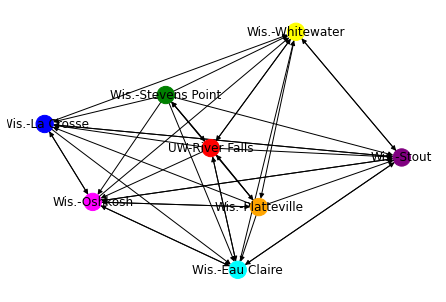

Rating & Ranking 2023 WIAC Women’s CBB#
and predicting the conference tournament
import numpy as np
import matplotlib.pyplot as plt
%matplotlib inline
import requests
from bs4 import BeautifulSoup
#get teams
url = "https://www.ncaa.com/scoreboard/basketball-women/d3/2023/02/15/wiac"
page = requests.get(url)
soup = BeautifulSoup(page.content, "html.parser")
if (page.status_code == 200):
ts = soup.find_all("span", class_="gamePod-game-team-name")
teams = [None]*len(ts) #empty array of teams
print(f"Found {len(teams)} teams.")
for i in range(0,len(teams)):
teams[i] = ts[i].text
print(teams)
Found 8 teams.
['Wis.-La Crosse', 'UW-River Falls', 'Wis.-Stevens Point', 'Wis.-Oshkosh', 'Wis.-Whitewater', 'Wis.-Platteville', 'Wis.-Eau Claire', 'Wis.-Stout']
#loop over season dates and extract games
years = [2022,2022,2023,2023]#,2023]
months = ["11", "12", "01", "02"]#, "03"]
days = np.arange(1,32)
#initialize and create empty numpy tournament matrix
tmat = np.zeros((len(teams),len(teams)))
gamectr = 0
games = []
for j in range(0,len(months)):
for day in days:
if day < 10:
url = f"https://www.ncaa.com/scoreboard/basketball-women/d3/{years[j]}/{months[j]}/0{day}/wiac"
else:
url = f"https://www.ncaa.com/scoreboard/basketball-women/d3/{years[j]}/{months[j]}/{day}/wiac"
page = requests.get(url)
if (page.status_code == 200):
soup = BeautifulSoup(page.content, "html.parser")
names = soup.find_all("span", class_="gamePod-game-team-name")
scores = soup.find_all("span", class_="gamePod-game-team-score")
N = int(len(names)/2) #number of games
for i in range(0,int(len(names)/2)):
if ((names[2*i].text in teams) and (names[2*i+1].text in teams)): #make sure both teams are in WIAC
#print(f"{names[2*i].text} is in teams and so is {names[2*i+1].text}")
#gamectr += 1
if not((scores[2*i].text == "") or (scores[2*i].text == "")): #make sure both teams have a score, ie game played
gamectr += 1
games.append([names[2*i].text,names[2*i+1].text,scores[2*i].text,scores[2*i+1].text,years[j],months[j],day])
if (int(scores[2*i].text) > int(scores[2*i+1].text)): #away team win
tmat[teams.index(names[2*i].text), teams.index(names[2*i+1].text)]+=1
#print(f"{names[2*i].text} beat {names[2*i+1].text} by a score of {scores[2*i].text} to {scores[2*i+1].text} on {months[j]}/{day}")
if (int(scores[2*i+1].text) > int(scores[2*i].text)): #home team win
tmat[teams.index(names[2*i+1].text), teams.index(names[2*i].text)]+=1
#print(f"{names[2*i+1].text} beat {names[2*i].text} by a score of {scores[2*i+1].text} to {scores[2*i].text} on {months[j]}/{day}")
if (int(scores[2*i].text) == int(scores[2*i+1].text)): #draw
tmat[teams.index(names[2*i+1].text), teams.index(names[2*i].text)]+=0.5
tmat[teams.index(names[2*i].text), teams.index(names[2*i+1].text)]+=0.5
#else:
#print(f"Game between {names[2*i].text} and {names[2*i+1].text} on {months[j]}/{day} has missing score(s)")
#else:
#print(f"Game between {names[2*i].text} and {names[2*i+1].text} on {months[j]}/{day} is missing teams index")
print("")
print(f"Processed {gamectr} games!")
print("")
---------------------------------------------------------------------------
KeyboardInterrupt Traceback (most recent call last)
Input In [3], in <cell line: 14>()
18 else:
19 url = f"https://www.ncaa.com/scoreboard/basketball-women/d3/{years[j]}/{months[j]}/{day}/wiac"
---> 20 page = requests.get(url)
21 if (page.status_code == 200):
22 soup = BeautifulSoup(page.content, "html.parser")
File ~\Anaconda3\lib\site-packages\requests\api.py:75, in get(url, params, **kwargs)
64 def get(url, params=None, **kwargs):
65 r"""Sends a GET request.
66
67 :param url: URL for the new :class:`Request` object.
(...)
72 :rtype: requests.Response
73 """
---> 75 return request('get', url, params=params, **kwargs)
File ~\Anaconda3\lib\site-packages\requests\api.py:61, in request(method, url, **kwargs)
57 # By using the 'with' statement we are sure the session is closed, thus we
58 # avoid leaving sockets open which can trigger a ResourceWarning in some
59 # cases, and look like a memory leak in others.
60 with sessions.Session() as session:
---> 61 return session.request(method=method, url=url, **kwargs)
File ~\Anaconda3\lib\site-packages\requests\sessions.py:529, in Session.request(self, method, url, params, data, headers, cookies, files, auth, timeout, allow_redirects, proxies, hooks, stream, verify, cert, json)
524 send_kwargs = {
525 'timeout': timeout,
526 'allow_redirects': allow_redirects,
527 }
528 send_kwargs.update(settings)
--> 529 resp = self.send(prep, **send_kwargs)
531 return resp
File ~\Anaconda3\lib\site-packages\requests\sessions.py:645, in Session.send(self, request, **kwargs)
642 start = preferred_clock()
644 # Send the request
--> 645 r = adapter.send(request, **kwargs)
647 # Total elapsed time of the request (approximately)
648 elapsed = preferred_clock() - start
File ~\Anaconda3\lib\site-packages\requests\adapters.py:440, in HTTPAdapter.send(self, request, stream, timeout, verify, cert, proxies)
438 try:
439 if not chunked:
--> 440 resp = conn.urlopen(
441 method=request.method,
442 url=url,
443 body=request.body,
444 headers=request.headers,
445 redirect=False,
446 assert_same_host=False,
447 preload_content=False,
448 decode_content=False,
449 retries=self.max_retries,
450 timeout=timeout
451 )
453 # Send the request.
454 else:
455 if hasattr(conn, 'proxy_pool'):
File ~\Anaconda3\lib\site-packages\urllib3\connectionpool.py:703, in HTTPConnectionPool.urlopen(self, method, url, body, headers, retries, redirect, assert_same_host, timeout, pool_timeout, release_conn, chunked, body_pos, **response_kw)
700 self._prepare_proxy(conn)
702 # Make the request on the httplib connection object.
--> 703 httplib_response = self._make_request(
704 conn,
705 method,
706 url,
707 timeout=timeout_obj,
708 body=body,
709 headers=headers,
710 chunked=chunked,
711 )
713 # If we're going to release the connection in ``finally:``, then
714 # the response doesn't need to know about the connection. Otherwise
715 # it will also try to release it and we'll have a double-release
716 # mess.
717 response_conn = conn if not release_conn else None
File ~\Anaconda3\lib\site-packages\urllib3\connectionpool.py:386, in HTTPConnectionPool._make_request(self, conn, method, url, timeout, chunked, **httplib_request_kw)
384 # Trigger any extra validation we need to do.
385 try:
--> 386 self._validate_conn(conn)
387 except (SocketTimeout, BaseSSLError) as e:
388 # Py2 raises this as a BaseSSLError, Py3 raises it as socket timeout.
389 self._raise_timeout(err=e, url=url, timeout_value=conn.timeout)
File ~\Anaconda3\lib\site-packages\urllib3\connectionpool.py:1040, in HTTPSConnectionPool._validate_conn(self, conn)
1038 # Force connect early to allow us to validate the connection.
1039 if not getattr(conn, "sock", None): # AppEngine might not have `.sock`
-> 1040 conn.connect()
1042 if not conn.is_verified:
1043 warnings.warn(
1044 (
1045 "Unverified HTTPS request is being made to host '%s'. "
(...)
1050 InsecureRequestWarning,
1051 )
File ~\Anaconda3\lib\site-packages\urllib3\connection.py:414, in HTTPSConnection.connect(self)
405 if (
406 not self.ca_certs
407 and not self.ca_cert_dir
(...)
410 and hasattr(context, "load_default_certs")
411 ):
412 context.load_default_certs()
--> 414 self.sock = ssl_wrap_socket(
415 sock=conn,
416 keyfile=self.key_file,
417 certfile=self.cert_file,
418 key_password=self.key_password,
419 ca_certs=self.ca_certs,
420 ca_cert_dir=self.ca_cert_dir,
421 ca_cert_data=self.ca_cert_data,
422 server_hostname=server_hostname,
423 ssl_context=context,
424 tls_in_tls=tls_in_tls,
425 )
427 # If we're using all defaults and the connection
428 # is TLSv1 or TLSv1.1 we throw a DeprecationWarning
429 # for the host.
430 if (
431 default_ssl_context
432 and self.ssl_version is None
433 and hasattr(self.sock, "version")
434 and self.sock.version() in {"TLSv1", "TLSv1.1"}
435 ):
File ~\Anaconda3\lib\site-packages\urllib3\util\ssl_.py:402, in ssl_wrap_socket(sock, keyfile, certfile, cert_reqs, ca_certs, server_hostname, ssl_version, ciphers, ssl_context, ca_cert_dir, key_password, ca_cert_data, tls_in_tls)
400 if ca_certs or ca_cert_dir or ca_cert_data:
401 try:
--> 402 context.load_verify_locations(ca_certs, ca_cert_dir, ca_cert_data)
403 except (IOError, OSError) as e:
404 raise SSLError(e)
KeyboardInterrupt:
print(games)
[['Wis.-Platteville', 'Wis.-Oshkosh', '60', '35', 2022, '11', 30], ['UW-River Falls', 'Wis.-Eau Claire', '71', '74', 2022, '11', 30], ['Wis.-Whitewater', 'Wis.-La Crosse', '58', '53', 2022, '11', 30], ['Wis.-Stout', 'Wis.-Stevens Point', '64', '58', 2022, '11', 30], ['Wis.-Oshkosh', 'Wis.-Stout', '58', '66', 2022, '12', 3], ['UW-River Falls', 'Wis.-Whitewater', '67', '64', 2022, '12', 3], ['Wis.-Platteville', 'Wis.-Stevens Point', '53', '59', 2022, '12', 3], ['Wis.-La Crosse', 'Wis.-Eau Claire', '56', '68', 2022, '12', 3], ['Wis.-Stout', 'UW-River Falls', '74', '59', 2023, '01', 4], ['Wis.-Eau Claire', 'Wis.-Oshkosh', '62', '53', 2023, '01', 4], ['Wis.-La Crosse', 'Wis.-Platteville', '70', '55', 2023, '01', 4], ['Wis.-Stevens Point', 'Wis.-Whitewater', '52', '55', 2023, '01', 4], ['Wis.-Oshkosh', 'UW-River Falls', '64', '53', 2023, '01', 7], ['Wis.-Platteville', 'Wis.-Stout', '61', '72', 2023, '01', 7], ['Wis.-Stevens Point', 'Wis.-La Crosse', '45', '47', 2023, '01', 7], ['Wis.-Whitewater', 'Wis.-Eau Claire', '79', '69', 2023, '01', 7], ['Wis.-Eau Claire', 'Wis.-Platteville', '75', '59', 2023, '01', 11], ['Wis.-Oshkosh', 'Wis.-Whitewater', '56', '66', 2023, '01', 11], ['Wis.-Stout', 'Wis.-La Crosse', '54', '72', 2023, '01', 11], ['UW-River Falls', 'Wis.-Stevens Point', '49', '54', 2023, '01', 11], ['Wis.-Platteville', 'UW-River Falls', '51', '61', 2023, '01', 14], ['Wis.-Whitewater', 'Wis.-Stout', '65', '72', 2023, '01', 14], ['Wis.-La Crosse', 'Wis.-Oshkosh', '53', '61', 2023, '01', 14], ['Wis.-Stevens Point', 'Wis.-Eau Claire', '38', '57', 2023, '01', 14], ['Wis.-Platteville', 'Wis.-Whitewater', '65', '49', 2023, '01', 18], ['UW-River Falls', 'Wis.-La Crosse', '36', '63', 2023, '01', 18], ['Wis.-Oshkosh', 'Wis.-Stevens Point', '58', '38', 2023, '01', 18], ['Wis.-Stout', 'Wis.-Eau Claire', '59', '85', 2023, '01', 18], ['Wis.-Whitewater', 'UW-River Falls', '65', '54', 2023, '01', 21], ['Wis.-Stout', 'Wis.-Oshkosh', '73', '75', 2023, '01', 21], ['Wis.-Stevens Point', 'Wis.-Platteville', '51', '49', 2023, '01', 21], ['Wis.-Eau Claire', 'Wis.-La Crosse', '64', '60', 2023, '01', 21], ['Wis.-Eau Claire', 'UW-River Falls', '70', '81', 2023, '01', 25], ['Wis.-Stevens Point', 'Wis.-Stout', '54', '71', 2023, '01', 25], ['Wis.-Oshkosh', 'Wis.-Platteville', '60', '59', 2023, '01', 25], ['Wis.-La Crosse', 'Wis.-Whitewater', '36', '66', 2023, '01', 25], ['UW-River Falls', 'Wis.-Stout', '55', '70', 2023, '02', 1], ['Wis.-Oshkosh', 'Wis.-Eau Claire', '65', '57', 2023, '02', 1], ['Wis.-Platteville', 'Wis.-La Crosse', '43', '70', 2023, '02', 1], ['Wis.-Whitewater', 'Wis.-Stevens Point', '73', '64', 2023, '02', 1], ['UW-River Falls', 'Wis.-Oshkosh', '44', '54', 2023, '02', 4], ['Wis.-Stout', 'Wis.-Platteville', '70', '61', 2023, '02', 4], ['Wis.-Eau Claire', 'Wis.-Whitewater', '52', '84', 2023, '02', 4], ['Wis.-La Crosse', 'Wis.-Stevens Point', '58', '48', 2023, '02', 4], ['Wis.-Stevens Point', 'UW-River Falls', '53', '64', 2023, '02', 8], ['Wis.-La Crosse', 'Wis.-Stout', '90', '95', 2023, '02', 8], ['Wis.-Whitewater', 'Wis.-Oshkosh', '67', '55', 2023, '02', 8], ['Wis.-Platteville', 'Wis.-Eau Claire', '59', '65', 2023, '02', 8], ['UW-River Falls', 'Wis.-Platteville', '55', '57', 2023, '02', 11], ['Wis.-Stout', 'Wis.-Whitewater', '75', '78', 2023, '02', 11], ['Wis.-Oshkosh', 'Wis.-La Crosse', '42', '56', 2023, '02', 11], ['Wis.-Eau Claire', 'Wis.-Stevens Point', '72', '60', 2023, '02', 11], ['Wis.-La Crosse', 'UW-River Falls', '62', '43', 2023, '02', 15], ['Wis.-Stevens Point', 'Wis.-Oshkosh', '38', '69', 2023, '02', 15], ['Wis.-Whitewater', 'Wis.-Platteville', '52', '61', 2023, '02', 15], ['Wis.-Eau Claire', 'Wis.-Stout', '45', '63', 2023, '02', 15]]
print(tmat)
[[0. 2. 2. 1. 0. 2. 0. 1.]
[0. 0. 1. 0. 1. 1. 1. 0.]
[0. 1. 0. 0. 0. 2. 0. 0.]
[1. 2. 2. 0. 0. 1. 1. 1.]
[2. 1. 2. 2. 0. 0. 2. 1.]
[0. 1. 0. 1. 2. 0. 0. 0.]
[2. 1. 2. 1. 0. 2. 0. 1.]
[1. 2. 2. 1. 1. 2. 1. 0.]]
Tournament matrix analysis#
wiacwins = np.zeros(8)
for i in range(0,8):
wiacwins[i] = tmat[i,:].sum()
print("Team: Wins")
for i in range(0,8):
print(f"{teams[i]}: {wiacwins[i]}")
Team: Wins
Wis.-La Crosse: 8.0
UW-River Falls: 4.0
Wis.-Stevens Point: 3.0
Wis.-Oshkosh: 8.0
Wis.-Whitewater: 10.0
Wis.-Platteville: 4.0
Wis.-Eau Claire: 9.0
Wis.-Stout: 10.0
t2 = np.dot(tmat,tmat)
print(t2)
wiac2wins = np.zeros(8)
for i in range(0,8):
wiac2wins[i] = t2[i,:].sum()
print("Team: Second Order Wins")
for i in range(0,8):
print(f"{teams[i]}: {wiac2wins[i]}")
[[ 2. 8. 6. 3. 7. 9. 4. 1.]
[ 4. 4. 4. 4. 2. 4. 2. 2.]
[ 0. 2. 1. 2. 5. 1. 1. 0.]
[ 3. 8. 8. 4. 5. 12. 3. 2.]
[ 7. 14. 15. 5. 2. 17. 4. 6.]
[ 5. 4. 7. 4. 1. 2. 6. 3.]
[ 2. 12. 9. 5. 6. 12. 3. 3.]
[ 5. 10. 10. 6. 6. 11. 5. 4.]]
Team: Second Order Wins
Wis.-La Crosse: 40.0
UW-River Falls: 26.0
Wis.-Stevens Point: 12.0
Wis.-Oshkosh: 45.0
Wis.-Whitewater: 70.0
Wis.-Platteville: 32.0
Wis.-Eau Claire: 52.0
Wis.-Stout: 57.0
Spectral rating#
wiacL = np.copy(tmat)
for j in range(0,8):
wiacL[:,j] = wiacL[:,j]/wiacL[:,j].sum()
v,w = np.linalg.eig(wiacL)
wiacspecrat = np.real(w[:,0]/max(w[:,0]))
print("Team: Spectral Rating")
for i in range(0,8):
print("{}: {:5.1f}".format(teams[i],wiacspecrat[i]))
Team: Spectral Rating
Wis.-La Crosse: 0.6
UW-River Falls: 0.5
Wis.-Stevens Point: 0.2
Wis.-Oshkosh: 0.7
Wis.-Whitewater: 1.0
Wis.-Platteville: 0.7
Wis.-Eau Claire: 0.7
Wis.-Stout: 0.9
Elo rating#
numgames = len(games)
scale = 400
K = 30
elo = [1000,1000,1000,1000,1000,1000,1000,1000]
for i in range(numgames-1,0,-1):
hteam = games[i][1]
ateam = games[i][0]
hscore = games[i][3]
ascore = games[i][2]
#get ratings
hrat = elo[teams.index(hteam)]
arat = elo[teams.index(ateam)]
diff = hrat - arat
#calc expected results/probs of winning
hexp = 1./(1. + 10**(diff/scale))
aexp = 1. - hexp
#update ratings
if (hscore > ascore): #home team win
elo[teams.index(hteam)] += K*(1. - hexp)
elo[teams.index(ateam)] += K*(0. - aexp)
elif (ascore > hscore): #away team win
elo[teams.index(hteam)] += K*(0. - hexp)
elo[teams.index(ateam)] += K*(1. - aexp)
#no else or draws needed
#[print(name,elo[names.index(name)]) for name in names ]
[print(name,elo[teams.index(name)]) for name in teams ];
Wis.-La Crosse 1051.9472395876528
UW-River Falls 871.8910603571981
Wis.-Stevens Point 825.556990780845
Wis.-Oshkosh 1060.9810821669041
Wis.-Whitewater 1122.4058855186036
Wis.-Platteville 884.6999690640331
Wis.-Eau Claire 1059.7165354939345
Wis.-Stout 1122.8012370308286
Colley#
Cmat = np.zeros((8,8))
bvec = np.zeros((8,1))
for i in range(0,8):
Cmat[i,i] = 2.
bvec[i] = 1.
numgames = len(games)
for i in range(0,numgames,1):
hteam = games[i][1]
ateam = games[i][0]
hscore = games[i][3]
ascore = games[i][2]
hidx = teams.index(hteam)
aidx = teams.index(ateam)
Cmat[hidx,hidx] += 1. #add 1 to total games played by home team
Cmat[aidx,aidx] += 1.
Cmat[hidx,aidx] += -1. #add -1 to offdiagonal entry corresponding to opponent
Cmat[aidx,hidx] += -1.
if (hscore > ascore): #home team win
bvec[hidx] += 1./2.
bvec[aidx] += -1/2.
elif (ascore > hscore): #away team win
bvec[aidx] += 1./2.
bvec[hidx] += -1/2.
Crating = np.linalg.solve(Cmat,bvec)
#print(Cmat)
#print(bvec)
print('Team: Colley rating')
for i in range(0,8):
print(f"{teams[i]}: {Crating[i][0]:4.2f}")
Team: Colley rating
Wis.-La Crosse: 0.56
UW-River Falls: 0.33
Wis.-Stevens Point: 0.28
Wis.-Oshkosh: 0.56
Wis.-Whitewater: 0.67
Wis.-Platteville: 0.33
Wis.-Eau Claire: 0.61
Wis.-Stout: 0.67
Massey#
numgames = len(games)
numteams = len(teams)
AN = np.zeros((numgames,numteams))
BN = np.zeros((numgames,1))
#build matrix and RHS vector
for i in range(0,numgames,1):
hteam = games[i][1]
ateam = games[i][0]
hscore = int(games[i][3])
ascore = int(games[i][2])
hidx = teams.index(hteam)
aidx = teams.index(ateam)
if hscore>ascore:
AN[i,hidx] = 1.
AN[i,aidx] = -1.
BN[i] = hscore-ascore
elif ascore>hscore:
AN[i,hidx] = -1.
AN[i,aidx] = 1.
BN[i] = ascore-hscore
MAT = np.dot(np.transpose(AN),AN)
BT = np.dot(np.transpose(AN),BN)
MAT[-1] = np.ones(numteams)
BT[-1] = 0.
r = np.linalg.solve(MAT,BT)
print('Team: Massey rating')
for i in range(0,numteams):
print(f"{teams[i]}: {r[i][0]:4.2f}")
Team: Massey rating
Wis.-La Crosse: 4.25
UW-River Falls: -5.19
Wis.-Stevens Point: -7.94
Wis.-Oshkosh: 0.81
Wis.-Whitewater: 5.63
Wis.-Platteville: -3.19
Wis.-Eau Claire: 1.75
Wis.-Stout: 3.88
Draw graph using networkx?#
import networkx as nx
Adj = np.copy(tmat)
ecol = ['black','red']
G = nx.DiGraph(edge_attr=['color'])
for i in range(0,len(Adj)):
for j in range(0,len(Adj)):
if Adj[i][j] == 1:
G.add_edge(j,i,weight=1)
if Adj[i][j] == 2:
G.add_edge(j,i,weight=2)
labeldict = {}
colors = ['red','blue','green','magenta','orange','purple','yellow','cyan']
nodecolors = []
for i in range(numteams):
labeldict[i] = teams[i]
nodecolors.append(colors[i%8])
#nx.draw_networkx( G,labels=labeldict, with_labels=True, node_color=nodecolors,pos=nx.shell_layout(G) )
nx.draw( G,labels=labeldict, with_labels=True, node_color=nodecolors,pos=nx.spring_layout(G) )
#nx.draw( G,labels=labeldict, with_labels=True, node_color=nodecolors, pos=nx.fruchterman_reingold_layout(G) )
#nx.draw( G,labels=labeldict, with_labels=True, node_color=nodecolors,pos=nx.spiral_layout(G) )
#nx.draw( G,labels=labeldict, with_labels=True, node_color=nodecolors,pos=nx.circular_layout(G))
plt.show()

print(Adj)
[[0. 2. 2. 1. 0. 2. 0. 1.]
[0. 0. 1. 0. 1. 1. 1. 0.]
[0. 1. 0. 0. 0. 2. 0. 0.]
[1. 2. 2. 0. 0. 1. 1. 1.]
[2. 1. 2. 2. 0. 0. 2. 1.]
[0. 1. 0. 1. 2. 0. 0. 0.]
[2. 1. 2. 1. 0. 2. 0. 1.]
[1. 2. 2. 1. 1. 2. 1. 0.]]
print(nodecolors)
[(0.25, 0.42857142857142855, 0.5), (0.25, 0.7142857142857143, 0.5), (0.25, 0.7857142857142857, 0.5), (0.25, 0.42857142857142855, 0.5), (0.25, 0.2857142857142857, 0.5), (0.25, 0.7142857142857143, 0.5), (0.25, 0.35714285714285715, 0.5), (0.25, 0.2857142857142857, 0.5)]